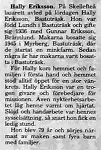

Helga Hallly Mariana Lund
Blev 79 år.
| Född: | 1910-08-12 Norsjö fs, Norsjö sn. [1] |
|---|
| Död: | 1990-03-31 Kanalg 5, Bastuträsk, Norsjö fs, Norsjö kn. [2] |
|---|
| Vigsel: | 1936-06. |
|---|
| Levde: | 1971 Myrberg, Bastuträsks kbfd, Norsjö kn. [1] |
|---|
| Levde: | 1981 Myrberg 1:15, Myrberg 3023, Bastuträsk, Bastuträsks kbfd, Norsjö kn. [3] |
|---|
Personhistoria
| Årtal | Ålder | Händelse |
|---|
| 1910 |
|
Födelse 1910-08-12 Norsjö fs, Norsjö sn [1] |
| 1936 |
|
Vigsel Erik Gunnar Eriksson 1936-06 |
| 1942 |
32 år |
Sonen Kurt-Lennart Gustaf Eriksson föds 1942-11-30 Lund, Skellefteå lfs, Skellefteå sn [4] |
| 1946 |
36 år |
Sonen "Love" Lars-Ove Gunnar Eriksson föds 1946-09-29 Myrberg 1:15, Bastruträsk, Bastuträsk kbfd, Norsjö sn [5] |
| 1954 |
44 år |
Modern Ida Kristina Hällgren dör 1954-09-16 Brännheden 1:5, Bastuträsk kbfd, Norsjö kn [6] |
| 1960 |
49 år |
Fadern Per August (P.A.) Gustafsson Lund dör 1960-06-21 Brännheden 1:5, Bastuträsk kbfd, Norsjö kn [6] |
| 1971 |
|
Levde Erik Gunnar Eriksson 1971 Myrberg, Bastuträsks kbfd, Norsjö kn [1] |
| 1981 |
|
Levde Erik Gunnar Eriksson 1981 Myrberg 1:15, Myrberg 3023, Bastuträsk, Bastuträsks kbfd, Norsjö kn [3] |
| 1990 |
79 år |
Död 1990-03-31 Kanalg 5, Bastuträsk, Norsjö fs, Norsjö kn [2] |
Källor
| [1] | Mtl Västerbottens län 1971 |
| |
| | |
| [2] | RTB 90 / SPAR 90 |
| |
| | |
| [3] | Mtl Västerbottens län 1981 |
| |
| | |
| [4] | SCB Födda AC Skellefteå las 393/1942 |
| |
| | |
| [5] | Mtl Sveriges befolkning 1950 |
| |
| | |
| [6] | DB, PA / DOR 52-60 |
| |
|
|  |
| 1990-04-02. Norra Västerbotten |
| |
|
| 1990-04-03. Norra Västerbotten |
|
{kind=link}
{kind=link}